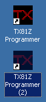

When you start up the program with this new icon for the first time, it will be almost like starting from scratch. The setup is completely different, so you'll have to enter your MIDI information and open your files and so forth. Once that's done, though, you'll be able to access each setup with its own icon.
I'll run through how to create a separate icon for a different TX81Z. To set this up, first make a copy of the program icon. Click on your TX81Z Programmer icon with the right mouse button to bring up the context menu. Click on "Create Shortcut" like so:
This will put you in a situation that looks like this:

Now click on the newly created icon with the right mouse button and select "Properties" from the menu:

A dialog box will pop up that looks like this:

This box is where you can enter command line options to a program, just like you were typing it in a DOS prompt. The "Target:" field contains the full path to program (i.e. its location on your hard drive). At the end of all this is where you can enter command line options. A program option begins with a forward slash followed by the option. The only options available for the TX81Z Programmer are single digits from 1 to 9. These tell the program which alternate setup to start with. Here I'll specify I want to use alternate setup #2, so I'm going to add " /2" after the program name (take note of the space before the slash).

Now click the "Change Icon..." button. You'll get a dialog that looks like this:

Choose the icon you want. I'm choosing the "2" icon to match the " /2" I entered. Click OK on that box. My icon properties box now looks like this with the command line option and new icon showing:

Click OK on the icon properties box, and now you'll have a spiffy new icon:

If you keep your icon in a different place, like in the start menu, right click on the start button and click "Explore". The icon will be somewhere in there — when you find it follow the procedure as outlined above.